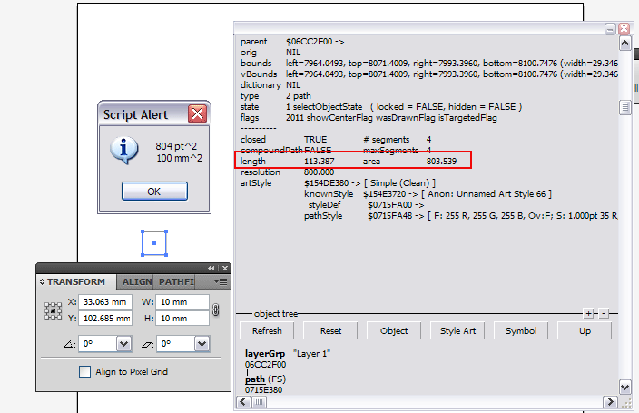

Попробуте нажать Shift+Ctrl+Alt+F12. Интересно для чего нужна эта панель?
qsedftghk / 02.11.2010, 19:17
это типа отладочная панель. Где-то на адобовском форуме я про это читал.. давно давно... Но как-то не проникся и забил на это.
Sancho / 02.11.2010, 19:37/21:10
Это окно приписываюТ к "пасхальным яйцам" программы :D
qsedftghk / 02.11.2010, 19:58/20:01
Да, вовсе оно не пасхально. Сочетание клавиш в keyboard shortcuts по-умолчанию прописано, какой же это пасхаль? Пасхаль это вот (в CS3, в CS5 не пробовал):
если, удерживая Alt, нажать черную стрелку в нижнем левом углу экрана (в статусной строке) , потом Show, то открывается дополнительная панель, где можно выбрать опции: Домашний телефон Мерди (никто не знает, кто это), Глаза (будут следить за перемещением мышки), Лунная фаза, Клики мышкой (счетчик), Счетчик продаж пакета Иллюстратора, Случайное число, Сколько дней осталось до Рождества :)
ЗЫ. В CS5 тоже фурычит.
Sancho / 02.11.2010, 21:11
Очепятался ))) Не я его приписываю а интернет :) А посхал не посхол... один фиг штука ненужная :) и не полезная
qsedftghk / 02.11.2010, 21:44
Как жешь не полезная? Откроешь так иногда это окошко и медитируешь... И перед глазами всё плывёт, плывёт... :D
itt / 04.11.2010, 23:12
При помощи этой панели можно узнать площадь любого сложного контура без дополнительных плагинов и скриптов. Для этого значение в pt нужно разделить на 8.035 и получить квадратные миллиметры.
это типа отладочная панель. Где-то на адобовском форуме я про это читал.. давно давно... Но как-то не проникся и забил на это.
Это окно приписываюТ к "пасхальным яйцам" программы :D
Да, вовсе оно не пасхально. Сочетание клавиш в keyboard shortcuts по-умолчанию прописано, какой же это пасхаль?
Пасхаль это вот (в CS3, в CS5 не пробовал):
если, удерживая Alt, нажать черную стрелку в нижнем левом углу экрана (в статусной строке) , потом Show, то открывается дополнительная панель, где можно выбрать опции: Домашний телефон Мерди (никто не знает, кто это), Глаза (будут следить за перемещением мышки), Лунная фаза, Клики мышкой (счетчик), Счетчик продаж пакета Иллюстратора, Случайное число, Сколько дней осталось до Рождества :)
ЗЫ. В CS5 тоже фурычит.
Очепятался ))) Не я его приписываю а интернет :)
А посхал не посхол... один фиг штука ненужная :) и не полезная
Как жешь не полезная? Откроешь так иногда это окошко и медитируешь... И перед глазами всё плывёт, плывёт... :D
При помощи этой панели можно узнать площадь любого сложного контура без дополнительных плагинов и скриптов.
Для этого значение в pt нужно разделить на 8.035 и получить квадратные миллиметры.

Ну вот, получается что полезная (кому то) :D